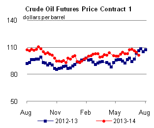

Released: July 16, 2014
Next Release: July 23, 2014
California continues to regulate carbon intensity of motor fuels used in California
The U.S. Supreme Court has declined to review the Ninth U.S. Circuit Court of Appeal’s September 2013 ruling that upheld the constitutionality of California’s Low Carbon Fuel Standard (LCFS). The court on June 30, 2014 returned the case to a lower court for additional review and the California LCFS remains in effect.
The Ninth Circuit had overturned a finding by a lower court that the LCFS violated interstate commerce laws. The plaintiffs in the case contended that the California LCFS improperly discriminates against fuels produced outside of California and violates the U.S. Constitution’s commerce clause that prevents a state from regulating commerce outside its borders. Plaintiffs included farm groups (the Rocky Mountain Farmers Union and others), biofuels trade groups (Renewable Fuels Association and Growth Energy), and petroleum fuel manufacturers (American Fuel and Petrochemical Manufacturers).
The California LCFS is a state regulation designed to reduce by 10% the average lifecycle carbon intensity of the motor gasoline and diesel transportation fuel pool, including all petroleum and nonpetroleum components, sold for consumption in California from 2012 to 2020. The lifecycle carbon intensity of a fuel is a measure of greenhouse gas emissions associated with producing and consuming the fuel. Increased production and use of low-carbon-intensity fuels, such as renewable diesel and cellulosic ethanol, and petroleum fuels made from less carbon-intensive crude oil is expected to reduce lifecycle carbon intensity. In addition, providers of alternatives to liquid transportation fuels, such as natural gas and electricity, may opt-in to the LCFS program if they meet program requirements.
Fuel providers (generally, petroleum refineries and fuel importers) that sell motor gasoline or diesel fuel for consumption in California are classified as regulated parties under LCFS. These parties are required to report the carbon intensity of the fuels they sell in California and to ensure that such fuels meet regulatory targets. Regulated parties must determine the lifecycle carbon intensity of a particular fuel by calculating it using the CA-GREET computer model or by using a lookup table provided by CARB. Regulated parties that anticipate either under-satisfying or over-complying with the carbon intensity requirements can balance their requirement by trading LCFS credits with other regulated parties.
The LCFS carbon intensity targets for gasoline and diesel become progressively stricter through 2020. For example, using the carbon intensities from the CARB lookup table, the 2014 target for gasoline can be met with a blend of 90% CARBOB (which is a petroleum blendstock for gasoline that meets California specifications) and 10% sugarcane ethanol imported from Brazil. The 2020 target, however, will require gasoline blends made from less-carbon-intensive components, such as cellulosic drop-in biofuel or ethanol made in an extremely energy-efficient production facility.
Because the Supreme Court denied review of the Ninth Circuit ruling, the LCFS will remain in effect pending additional review by lower courts. In the meantime, CARB is proposing to readopt the LCFS in 2014 to implement administrative improvements to the original 2009 regulation. CARB also expects the 2014 readoption to “provide a stronger signal for investments in and production of the cleanest fuels, offer additional flexibility, update critical technical information, and provide for improved efficiency and enforcement of the regulation.”
Gasoline and diesel fuel prices both decrease
The U.S. average retail price of regular gasoline decreased four cents to $3.64 per gallon as of July 14, 2014, less than a cent lower than last year at this time. Prices decreased in all regions of the nation except the Rocky Mountains, where the average price increased less than a penny to remain at $3.64 per gallon. The largest price decrease occurred in the Midwest, where the price decreased eight cents to $3.54 per gallon. On the West Coast, the price was down four cents to $4.00 per gallon, and the East Coast price was down three cents to $3.63 per gallon. The Gulf Coast price was down two cents to $3.44 per gallon.
The national average diesel fuel price decreased two cents to $3.89 per gallon, three cents higher than last year at this time. Prices decreased in all regions of the nation, with the Midwest decreasing the most, by three cents to $3.84 per gallon. The West Coast, East Coast, and Gulf Coast prices all decreased two cents, to $4.05 per gallon, $3.96 per gallon, and $3.79 per gallon, respectively. The Rocky Mountain price was down one cent to $3.90 per gallon.
Propane inventories continue to rise
U.S. propane stocks increased by 3.2 million barrels last week to 63.3 million barrels as of July11, 2014, 5.3 million barrels (9.2%) higher than a year ago. Gulf Coast inventories increased by 1.6 million barrels and Midwest inventories increased by 1.2 million barrels. East Coast inventories increased by 0.2 million barrels and Rocky Mountain/ West Coast inventories increased by 0.1 million barrels. Propylene non-fuel-use inventories represented 6.4% of total propane inventories.
Text from the previous editions of This Week In Petroleum is accessible through a link at the top right-hand corner of this page.
| Retail Data | Change From Last | Retail Data | Change From Last | ||||
| 07/14/14 | Week | Year | 07/14/14 | Week | Year | ||
| Gasoline | 3.635 | Diesel Fuel | 3.894 | ||||
|  |  |
||||||||||||||||||||||||||
|
|||||||||||||||||||||||||||
| *Note: Crude Oil Price in Dollars per Barrel. | |||||||||||||||||||||||||||
| Stocks Data | Change From Last | Stocks Data | Change From Last | ||||
| 07/11/14 | Week | Year | 07/11/14 | Week | Year | ||
| Crude Oil | 375.0 | Distillate | 124.3 | ||||
| Gasoline | 214.5 | Propane | 63.288 | ||||